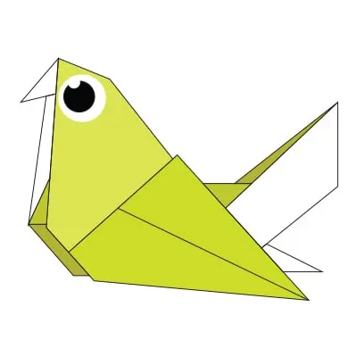

Interesting facts about Camels:
There are two types of camels: One humped or “dromedary” camels and two humped Bactrian camels.
Camels have three sets of eyelids and two rows of eyelashes to keep sand out of their eyes.
Camels have thick lips which let them forage for thorny plants other animals can't eat.

Interesting facts about Chameleons:
THEIR FEET WORK LIKE SALAD TONGS.
ALMOST HALF OF ALL KNOWN SPECIES LIVE IN MADAGASCAR.
THEY MAINLY CHANGE COLOR IN ORDER TO COMMUNICATE OR REGULATE BODY TEMPERATURE.
Interesting facts about Pigeons:
Pigeons are incredibly complex and intelligent animals.
Pigeons are renowned for their outstanding navigational abilities.
Pigeons mate for life, and tend to raise two chicks at the same time.
Interesting facts about Teddy Bear:
The term bear-hug was first recorded in 1846.
The Teddy Bears' Picnic song was originally called The Teddy Bear Two Step.
The Oxford English Dictionary dates the first use of the term teddy bear to 1906.
Interesting facts about Panda:
They have great camouflage for their environment.
Their eyes are different to normal bears.
Cubs are well protected in their first month.

Interesting facts about Flying-Cicada:
Cicadas can survive a huge fall as babies, or nymphs.
The loud whirring or buzzing sound you hear is an all-male cicada chorus.
Females may be attracted to the sound of motors.